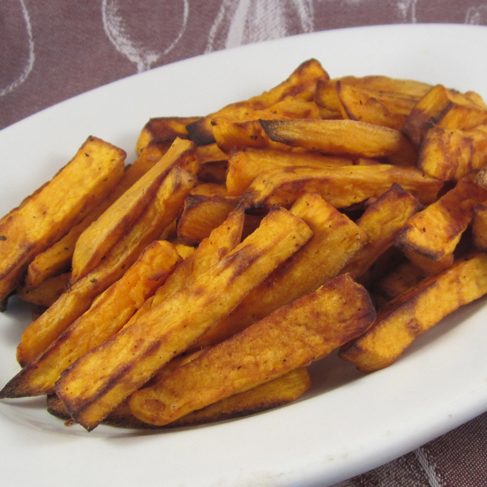

Air-Fried Sweet Potato Fries

Description
Simple and addicting air-fried sweet potato fries. I bet you can't eat just one.
Use this recipe for 2 servings.
Ingredients
- 1 sweet potatoes, peeled and cut into 1/2 inch wide fries
- 1 tablespoon canola oil
- ½ teaspoon kosher salt
- ¼ teaspoon pepper
- ⅛ teaspoon garlic powder
- ⅛ teaspoon ground sweet paprika
Steps
- Preheat the air fryer to 400 degrees F (200 degrees C).
- Combine sweet potato fries and canola oil in a bowl and mix. Season with salt, pepper, garlic powder, and paprika. Mix until all fries are evenly coated.
- Divide sweet potatoes into 2 or 3 batches for cooking. Place an even layer of sweet potatoes in the fry basket, insert in the air fryer, and cook until golden, about 10 minutes. Repeat with remaining sweet potatoes.
Go back